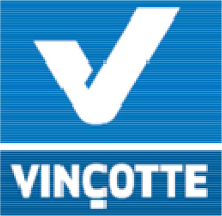
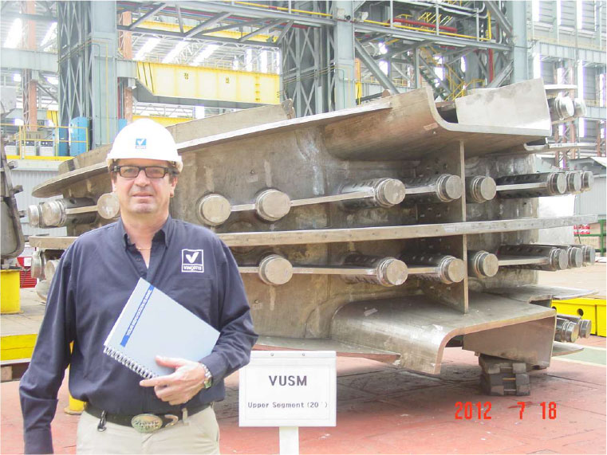
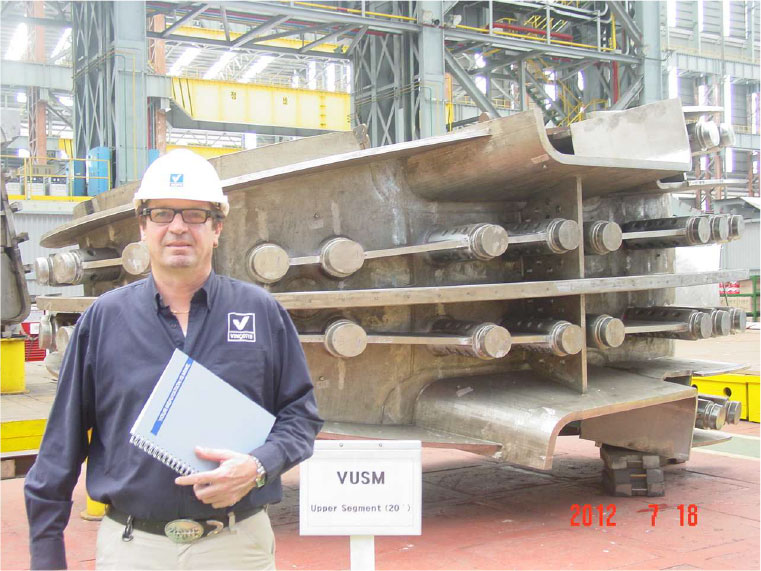
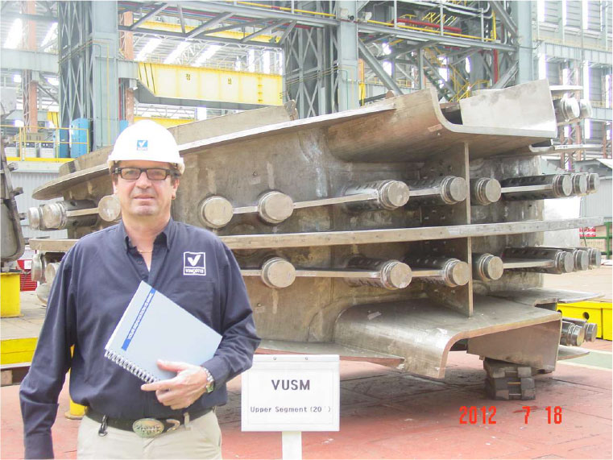

AIB-Vinçotte is a global solution provider for quality, safety and environmental issues
As early as 1938, Vinçotte applied radiographic assessments to boilers and pressure machinery in general.
During the 1960s AIB was the first entity to organise international congresses on the theme of non-destructive testing and safety at the workplace.
Both companies developed into key international players in the safety market in general and merged in 1989.
It’s 1700 engineers and specialists provide nowadays over 130 safety, quality and environmental related services, with an eye on the future.
Independent inspections, certification, consulting, testing and training services.
- safety and reliability analyses and reviews- conformity assessments during plant commissioning
- in-service inspections
- periodic safety reassessments
- occupational health and safety inspections
- expert appraisal of damages
- protection against ionising radiations
- industrial engineering inspections
- on-site measuring and testing services
- advanced ultrasonic probes design

 

Contact Person
Mr Andre Weyn
Nuclear Pressure Equipment
email: aweyn@vincotte.be
tel: +32 2 6745775
www.vincotte.com
Jan Olieslagerslaan 35
1800 Vilvoorde
B-2940 Stabroek
Belgium

Contact Person
Mr Andre Weyn
Nuclear Pressure Equipment
email: aweyn@vincotte.be
tel: +32 2 6745775
www.vincotte.com
Jan Olieslagerslaan 35
1800 Vilvoorde
B-2940 Stabroek
Belgium